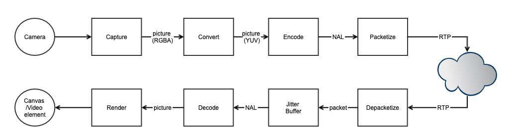

视频编码框架
Posted on Wed 07 July 2021 in Journal
视频编码框架
视频压缩方法主要包括去除
- 空间上的冗余
- 时间上的冗余
- 统计上的冗余
- 感知上的冗余
主流的视频编码标准都采用了类似的框架
-
由视频源输入图像，图像被分割成宏块（macro-block, MB）, 每个宏块包括 1 个
16*16像素的亮度分量及 2 个8*8像素的色度分量，按光栅扫描依次处理，以宏块为单位进行编码 -
由码流控制模块根据宏块特性和当前比特分配情况决定采用帧内编码或帧间编码
-
如果采用帧内编码，可采用频域或空域预测，预测残差进行变换和量化处理
-
如果采用帧间编码，先进行运动估计，在解码缓存中找到与当前处理宏块最相似的重构图像块，获得运动矢量信息，然后将预测残差进行变换和量化处理。
-
将量化后的残差系数，运动信息送入熵编码器，从而生成最终的编码码流
-
为避免预测所带来的误差偏移累积，在编码端包含一个解码模块，将量化后的残差数据经过反量化和反变换，重建残差信号，并且与帧内或帧间预测的参考信号相加，得到重建图像。 将些图像存入到解码缓存中，以用于将来图像的预测参考。
-
对于重构图像，可以采用环内去块效应滤波器来减轻人工编码痕迹，处理后的图像用作将来的预测参考。
例如 H.264 的编码流程

Words
- colony 英 [ˈkɒləni] 美 [ˈkɑːləni] n. 殖民地；移民队；种群；动物栖息地
Each colony also contains eggs and immature bees in various stages of development
- pollination [pɔli'neiʃn]
n. [农学] 授粉（作用）
Bees are a critical part of the food chain because flowering plants depend on insects for pollination and the honeybee is the most effective. 蜜蜂是食物链的重要组成部分，因为开花植物的授粉依赖于昆虫，而蜜蜂是最有效的授粉昆虫。
- collapse 英 [kəˈlæps] 美 [kəˈlæps]
v. （突然）倒塌；（尤指因病重而）倒下，昏倒；（尤指工作劳累后）坐下；崩溃；（货币）贬值；折叠；（肺或血管）萎陷；套缩 n. 崩溃；（突然）倒塌；病倒；（货币）
- brink 英 [brɪŋk] 美 [brɪŋk]
n. （峭壁的）边缘 n. (Brink)人名
- teeter 英 [ˈtiːtə(r)] 美 [ˈtiːtər]
v. 摇晃，摇摇欲坠；举棋不定 n. 跷跷板；摇摆不定
Their economy is teetering on the brink of collapse. 他们的经济正摇摆于崩溃的边缘。
- malnutrition 英 [ˌmælnjuˈtrɪʃn] 美 [ˌmælnuˈtrɪʃn] n. 营养失调，营养不良
Hunger and malnutrition are a cause, not just a result, of poverty. 饥饿与营养不良是贫困的起因，而不仅仅是结果。
- infection 英 [ɪnˈfekʃn] 美 [ɪnˈfekʃn]
n. 感染；传染；影响；传染病
These symptoms may be referable to virus infection rather than parasites. 这些症状也许是由病毒感染引起的，而与寄生虫无关。
- genetic 英 [dʒəˈnetɪk] 美 [dʒəˈnetɪk]
adj. 遗传的；基因的；起源的
We know fidelity is an essential principle of genetic transmission. 我们知道，准确性是基因传递中的一个必要原则
- species 英 [ˈspiːʃiːz] 美 [ˈspiːʃiːz]
n. 物种，种类 adj. 原种的
Pandas are an endangered species. 大熊猫是一种濒危物种。